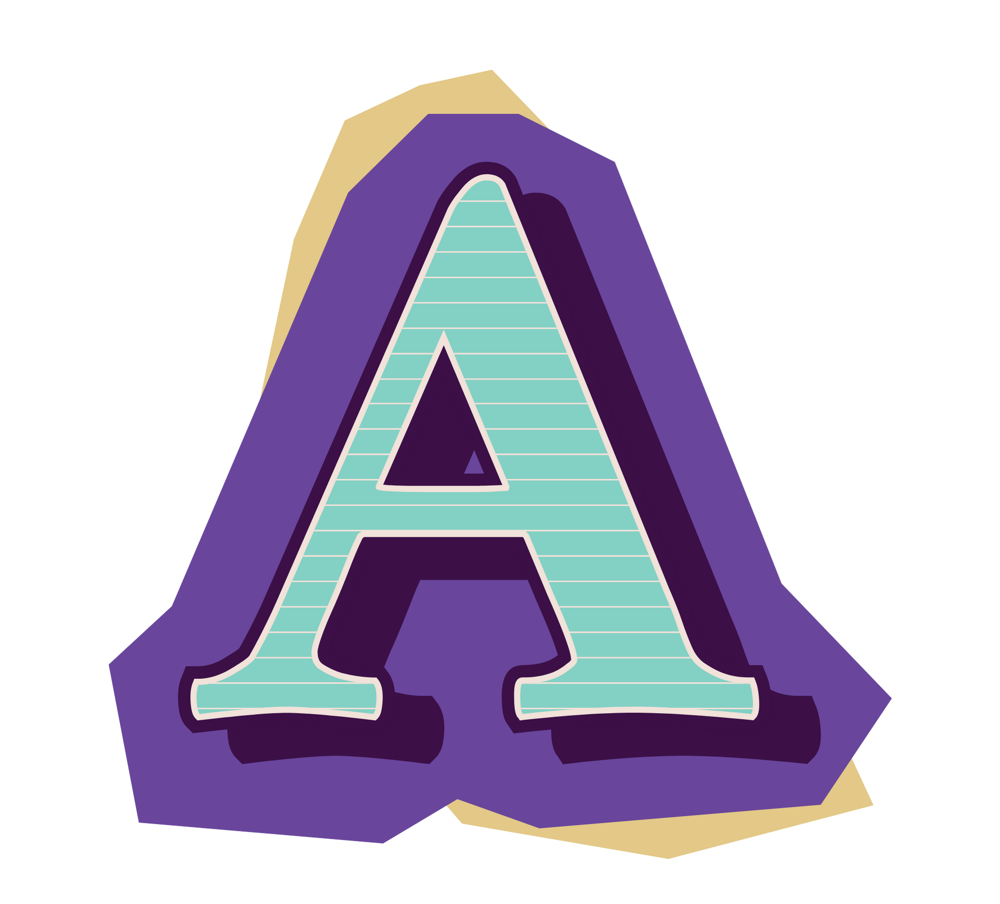
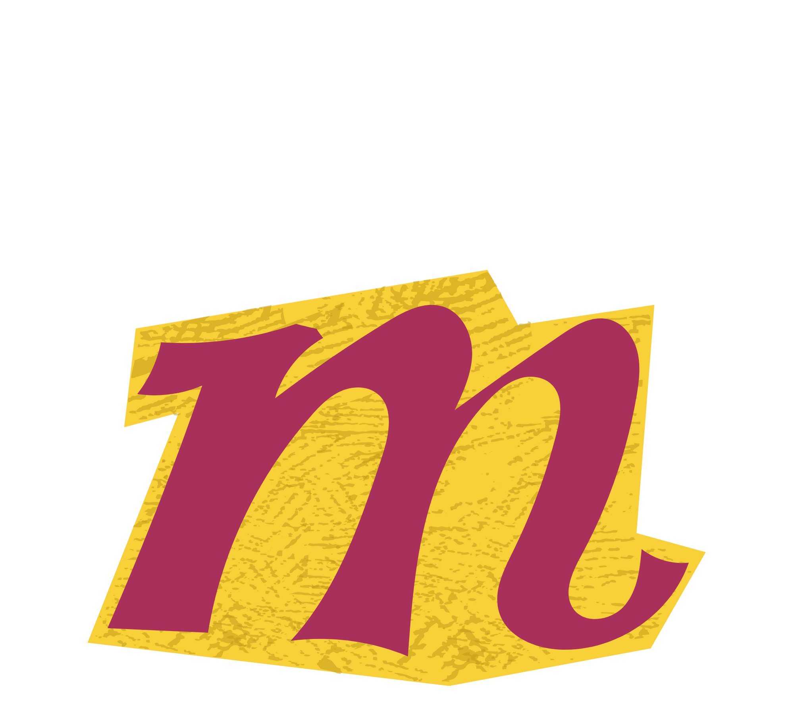
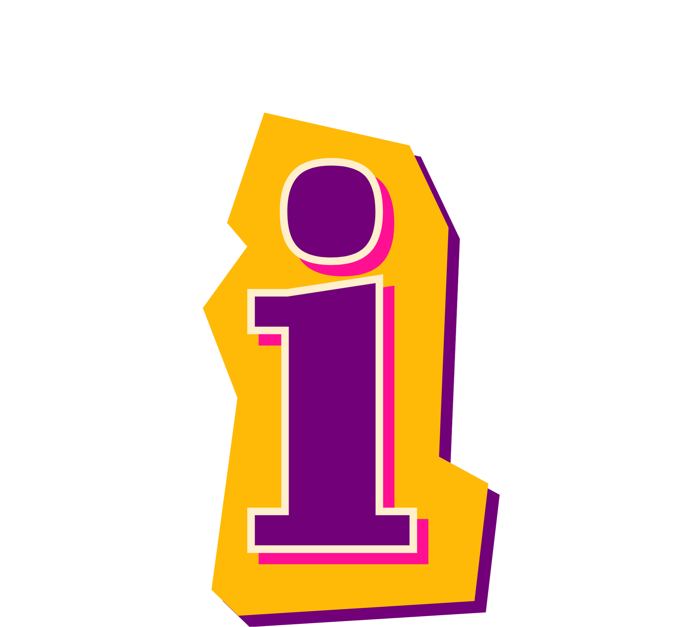
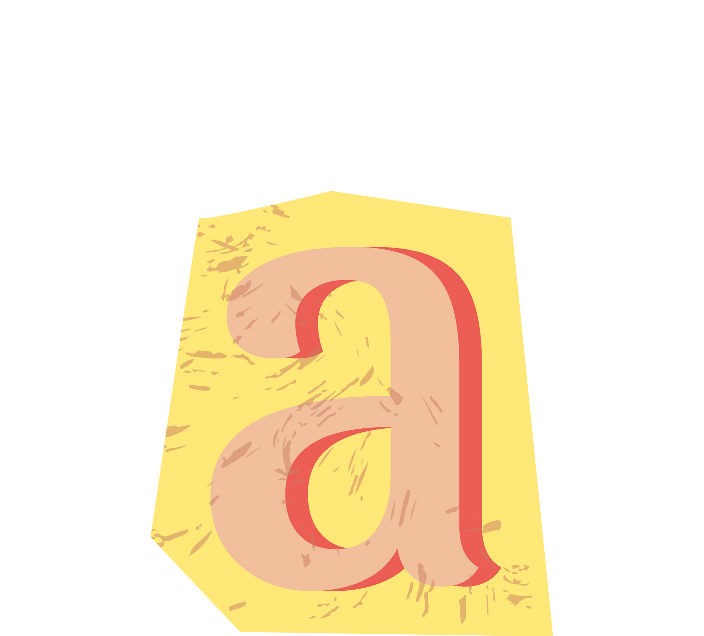
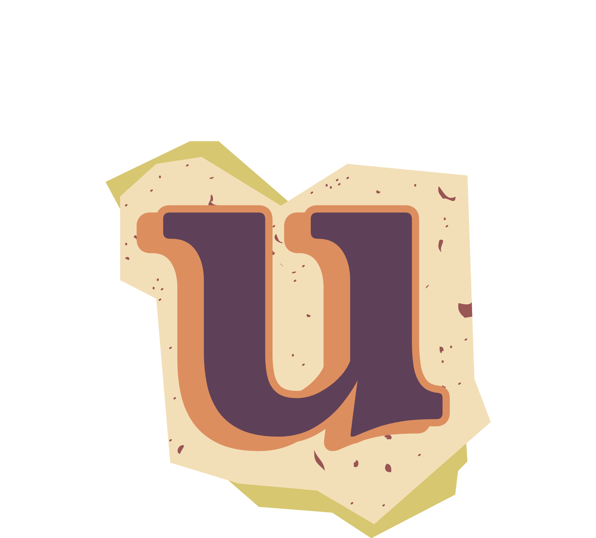

Un método no es suerte, es rigor
 El desarrollo del proyecto se apoya en una metodología activa y participativa, donde el alumnado no es un mero espectador, sino el verdadero protagonista del proceso creativo. El aprendizaje se construye a partir de la práctica y la experiencia directa, siguiendo un enfoque de aprender haciendo (learning by doing).
El desarrollo del proyecto se apoya en una metodología activa y participativa, donde el alumnado no es un mero espectador, sino el verdadero protagonista del proceso creativo. El aprendizaje se construye a partir de la práctica y la experiencia directa, siguiendo un enfoque de aprender haciendo (learning by doing).
- prendizaje Basado en Proyectos (ABP)
El cortometraje funciona como un proyecto global que integra diferentes competencias: escritura, comunicación, trabajo en equipo, alfabetización audiovisual, planificación y uso de herramientas digitales. Los alumnos trabajan con un producto final real (La Herradura) que da sentido a todas las actividades. - etodología cooperativa
El proyecto fomenta el trabajo en grupo mediante la asignación de roles (dirección, interpretación, cámara, sonido, arte, producción), de manera que cada alumno aporta sus capacidades y se siente parte de un engranaje común. La cooperación se convierte en un valor clave, tanto en los ensayos como en el rodaje y la difusión. - nterdisciplinariedad
Más allá del producto audiovisual, se trabajan competencias transversales: comunicación lingüística (guion, dosier), competencia digital (uso de Lucid, Trello, Canva), competencias sociales y cívicas (resolución de conflictos, trabajo colaborativo) y sentido de iniciativa y espíritu emprendedor (difusión, organización del estreno). - prendizaje significativo
Todo el proceso conecta con el contexto cercano del alumnado: su instituto, sus rutinas, sus compañeros. Esta cercanía permite que el aprendizaje sea relevante y transferible, logrando que los valores del proyecto —la importancia del esfuerzo frente a la suerte, el compañerismo y la superación— calen en su experiencia personal. - so de las TIC
Para organizar el trabajo y coordinar las distintas fases del proyecto hemos incorporado herramientas digitales como Trello y Lucid.app, que permiten visualizar las tareas, planificar la disponibilidad del equipo y dar seguimiento a los avances. También se han utilizado recursos como Canva o generadores de IA para el diseño de carteles, logos o canciones de cabecera. Esta integración de las TIC fomenta la autonomía del alumnado, potencia la creatividad y los conecta con dinámicas de trabajo similares a las que se emplean en entornos profesionales reales.